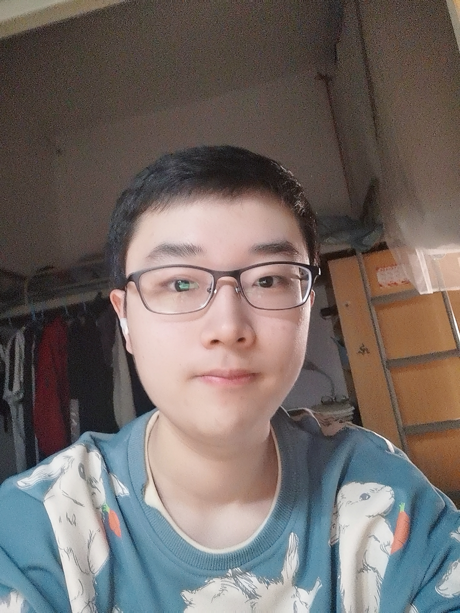

|
 |
Hanxun Yu (于瀚勋)
Undergraduate Student (graduating in 2023). School of Computer Science, Wuhan University (WHU), China. Email: hanxun_yu@whu.edu.cn Wechat: hanxunyu828 |
Hello! I am currently an undergraduate student majoring in Computer Science and Technology in
Wuhan University, expected to graduate in 2023 and aiming for a PhD position for 2023 Fall.
I am forturnately to conduct research under the supervision of
Prof. Zheng Wang .
My research interests mainly lie at the intersection of computer vision and machine learning, specifically on attacking object detection model by using adversarial examples. I am always open to new topics.
Computer Vision
Adversarial Attack
Probability and Statistics
Programming Languages
Research Intern
Advisor: Xujie Si
Topic: Learning-based Feedback Propagation for Programming Assignments.
iURP student
Advisor: Chang D. Yoo
Topic: Study of Uncertainty in Bayesian Neural Network Prediction.
Research Intern
Advisor: Zheng Wang
Topic: An Image Transformer for Generating Stylized Adversarial Patches
Algorithm Engineering Intern
2020,2021. First-Class Scholarship of Excellent Undergraduate Student
2021. National Encouragement Scholarship
2020. Individual Scholarship
2020,2021. Merit Student
2020,2021. Excellent League Member
2020. Second prize of National English Competition for College Students (NECCS)
Python (Pytorch, Numpy, Pandas, etc.), Java, C++
Linux, Windows
Cats, Music, Basketball, Hot food